The Revenue Chain Teardown
Deals stall in the first call, so you hire a sales consultant to fix the discovery script. Nothing changes, because the real cause is upstream.

Maybe the ads are bringing in people who were never going to buy. Maybe the site never gave anyone a reason to act this quarter instead of next one. Maybe your rep is trying to manufacture urgency from scratch on a thirty-minute call, because nothing before that call built any.
A marketing consultant can’t see how the call actually goes. A sales consultant can’t see what the ad promised. I trace the whole chain, first impression to closed-lost note, and tell you the one thing to fix first.
Run your own math: if a five-point improvement in win rate is worth more than $10,000 to your business over the next year — and for most B2B companies with a real deal size, it is — this is a rounding error against what the leak is already costing you.
Scope
| When | What | Mode |
|---|---|---|
| Day 0 | Intake call | Live · 90 min |
| Days 1–7 | Evidence gathering across the whole chain | Async |
| Days 8–11 | Analysis and report | Async |
| Day 12 | Readout — the findings, ranked | Live · 90 min |
Two live calls; everything else happens on your schedule. If you decide to move forward on what we find, half of the $10,000 is credited toward that work — see Fractional Marketing & GTM.
Send as much of this as you can before Day 1. It’s the raw material the Teardown gets built from, not paperwork, and almost no one has all of it.
How buyers find you
How your reps sell
How it’s measured
If you can’t easily produce the closed-lost data, that’s already a finding.
I want to hear from a handful of the people closest to your revenue chain. We’ll decide exactly who at intake.
Plus: a short list of three to five deals you still can’t explain.
Async A short survey and a Loom from each person, by default.
Live A conversation only where it’s worth it, which we’ll decide together.
A written report of ranked findings, with one clearly marked “fix this first,” and a 90-minute readout where we go through every one together.
A deliberately simple sample. Your report goes far deeper: the full evidence behind every finding, and a readout that walks through all of it with you.
1 · Fix this first
…and everything else, ranked below.
Every finding written up the same way, so you can compare them and hand each one to the person who owns it.
The finding that matters most is on top and marked. Everything else sits below it, in order.
Ninety minutes walking through the evidence and what to do next. If you decide to keep going, half of the $10,000 is credited toward that work.
If you already know which number is bothering you, start the Teardown. If you’d rather talk it through first, book a twenty-minute discovery call, and I’ll tell you honestly whether the Teardown is the right shape for it, or whether it isn’t.
$10,000, fixed, two weeks. Half is credited toward follow-on work if we keep going. Or see Fractional Marketing.